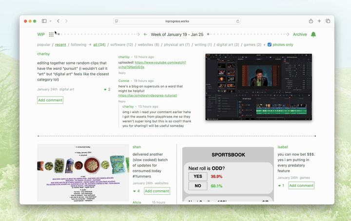
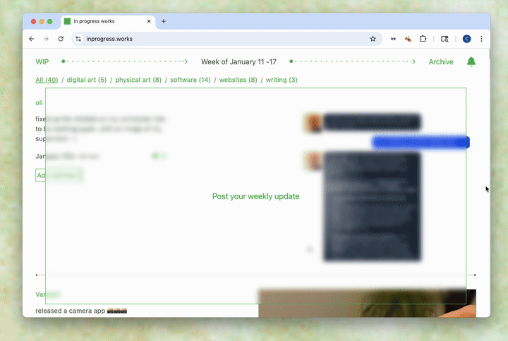

This website is meant for desktop so it'll probably look slightly off on mobile!
Connie is a software artist, researcher, and image-maker. She is interested in critiquing and creating software tools and networks to propose new features and provide alternatives to current ones.
Specifically, she sees software as a way to express your values, a term she calls values-based software. We are drawn to what we want to make because of our past and present. What if we made design decisions driven from how we want to see the world instead of profit?
For her, that manifests as:
1Returning to natural cycles to incentivize thoughtful consumption and an impetus towards archival.
2Our truest selves are not how we appear, but what we make.
3The world can become a better place if everyone was an artist.
1. Software closer to natural cycles to incentivize thoughtful consumption and an impetus towards archival.
Growing up I wanted to be an environmental scientist before a product designer. As I learned more about ways to bring my two interests together, I started to learn about sustainable web design. Everything on the internet takes weight and acts as if it will last forever when it reasonably doesn’t. Must temporality indicate loss? Or does it move us towards how we are meant to live?
[2025] Link Dump, an ephemeral link canvas where links will expire after a prescribed period of time.

Are.na research channels: organic web
2. Our truest selves are not how we appear, but what we make.
We exist in networked environments, there is no escaping it. However it seems like social media these days purely serves to sell. We no longer go on to connect, but to watch and perform. What does it mean to be your true self online?
[2025-26] inprogress.works, a lightweight social network of posting weekly works-in-progresses. The key mechanic is you cannot see anyone else’s post until you post yours. Future iterations will explore creating a profile through more abstract prompts.
Are.na research channels: small networks, being perceived, offline
3. The world can become a better place if everyone was an artist.
Part of my art practice is self-expression to understand myself and heal, often I do this through poetic comics and net art.
This year, I'm excited to explore toolmaking to make this easier for others. Creating and making things is the surest path towards self actualization and engaging with the world.
Are.na research channels: making as processing, Universal feelings of self expression, poetic comic archive
Yearly artist reflections